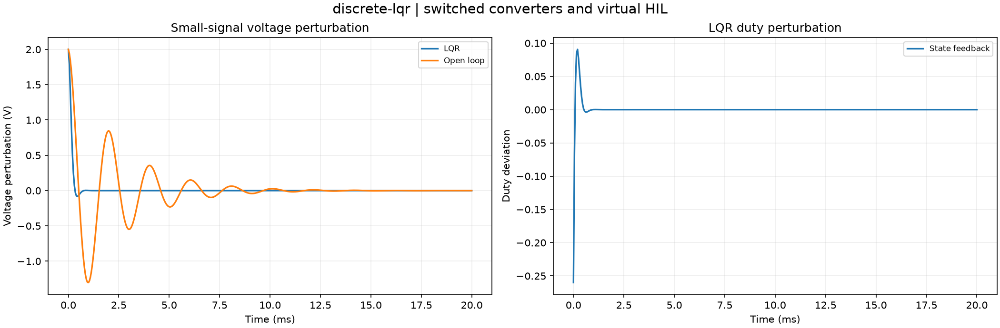

Reproducible switched converters and virtual HIL. Units and field components are printed on the scientific axes. peak d-q quantities use exp(+i omega t); terminal currents point into the protected line.
Sealed numeric archive | Summary CSV | Physical parameters | Run request | Source and environment

| final_voltage_error_v | -2.529483493455344e-63 |
|---|---|
| spectral_radius | 0.6962405892630522 |
These are simulations, not hardware measurements. Network-model, measurement, timing and statistical uncertainty require distinct convergence checks. Singular or unilluminated data use explicit masks.
Source revision: b037b9bac4fb91b47282a5f1fd30d5a00f340256.
Dirty checkout: False.
Configuration SHA-256: c4e8578b48b17355d2bf61dd2b5cfedf38cf35d1ccceec639a901f2e04b57d9d.
Replay preserves original source and parameter provenance. SHA-256 manifests detect changed bytes; they are unsigned integrity records, not certificates of physical validity.